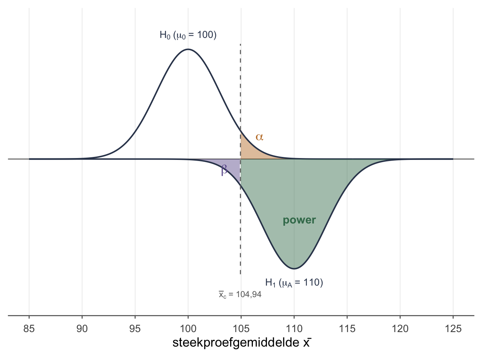

Thema 10 · Power
Deel 5 — Toetsen · vang ik een echt effect?
De andere kant van het verhaal
In thema 8 vroegen we: als \(H_0\) waar is, hoe vaak ten onrechte verwerpen? Antwoord: \(\alpha\). Dat is de kans op een type-I-fout, het vals alarm.
Nu de andere kant: stel dat er écht een effect is van een bepaalde grootte — hoe vaak verwerpen we dan terecht? Dat heet de power. (Let op: één toets heeft niet één vaste power — hij hangt af van hóé groot het echte effect is, zoals je zo gaat zien.) Het is de kans dat we een echt effect ook echt vangen — het tegenovergestelde van \(\beta\) (de type-II-fout, het misser-tarief). Formeel:
\[\text{power} = 1 - \beta\]
Een toets met lage power ziet effecten over het hoofd, ook als ze er wél zijn. Een toets met hoge power ziet ze.
Twee werelden naast elkaar
Power begrijp je het beste door twee verdelingen tegelijk te tekenen: de wereld onder \(H_0\) (centrum \(\mu_0\)) en de wereld onder \(H_1\) (centrum \(\mu_A\), de “echte” gemiddelde van de alternatieve hypothese). Beide steekproevenverdelingen hebben dezelfde standaardfout. De kritieke waarde \(\bar{x}_c\) — onze grens van verwerpen — snijdt door beide. Let op de asymmetrie: die grens maken we in de \(H_0\)-wereld (daar bepaalt \(\alpha\) hem), maar daarna leggen we precies dezelfde grens óók over de \(H_1\)-wereld om te zien hoeveel we vangen:
- In de \(H_0\)-wereld: rechts van \(\bar{x}_c\) ligt \(\alpha\) (vals alarm). Links ligt \(1-\alpha\).
- In de \(H_1\)-wereld: links van \(\bar{x}_c\) ligt \(\beta\) (gemist). Rechts ligt de power.
Onze egels uit thema 8 (\(\sigma_x = 15\), \(n = 25\), \(\mu_0 = 100\), \(\alpha = .05\) eenzijdig). Stel dat de echte populatie-pienterheid \(\mu_A = 110\) is (egels zijn écht slim). Met \(SE_{\bar{x}} =3\) en \(\bar{x}_c = 104{,}94\):
De power uitrekenen
Power is de kans dat \(\bar{x}\) — onder \(H_1\) — bóven de kritieke waarde valt. Dat is gewoon \(p \to z \to x\), alleen nu met \(\mu_A\) als centrum in plaats van \(\mu_0\):
\[z_{\text{power}} = \frac{\bar{x}_c - \mu_A}{SE_{\bar{x}}} = \frac{104{,}94 - 110}{3} = -1{,}687\]
\[\text{power} = P(Z > -1{,}687) \approx 0{,}954\]
Dus: bij \(\mu_A = 110\) vangen we het effect in zo’n 95% van de steekproeven. De gemiste kans \(\beta = 1 - 0{,}954 = 0{,}046\).
Wat maakt power groter?
Vier knoppen:
- Grotere \(n\) → kleinere \(SE_{\bar{x}}\) → de bergen worden smaller → minder overlap → meer power. (De duurste knop in onderzoek: meer deelnemers werven.)
- Groter effect (\(\mu_A - \mu_0\)) → de bergen schuiven verder uit elkaar → meer power. (Vaak niet direct jouw keuze: de werkelijkheid bepaalt grotendeels hoe groot het effect is — al kun je ’m soms vergroten met een sterkere interventie of een betere meting.)
- Grotere \(\alpha\) → \(\bar{x}_c\) schuift naar links → minder \(\beta\), meer power. (Maar je accepteert ook meer vals alarm — afruil.)
- Kleinere \(\sigma_x\) → kleinere \(SE_{\bar{x}}\) → smallere bergen → meer power. (Vaak buiten je controle; soms te krimpen door betere meting.)
Een lage-power voorbeeld
Stel je hebt maar \(n = 9\) egels in plaats van 25. Dan \(SE_{\bar{x}} =15/\sqrt{9} = 5\) en \(\bar{x}_c = 100 + 1{,}645 \cdot 5 = 108{,}23\). Power bij \(\mu_A = 110\):
\[z = \dfrac{108{,}23 - 110}{5} = -0{,}354 \quad\Rightarrow\quad \text{power} = P(Z > -0{,}354) \approx 0{,}638\]
Slechts 64% — je mist het effect in ruim 1 op de 3 onderzoeken. Dat is de prijs van een kleine steekproef. (En een klein effect maakt het nóg erger.) Let op wat dit betekent: een níét-significant resultaat is hier nauwelijks geruststellend — misschien was je toets gewoon te blind om het effect te zien.
Oefenen
Wat blijft liggen
Wij rekenen met bekende \(\sigma\). In de praktijk doe je vooraf een power-analyse met een geschatte effectgrootte (Cohens \(d\)) en gebruik je software (G*Power, R-pakket pwr). De gedachte — twee werelden, een grens ertussen, vier kansen — blijft hetzelfde.
Tot slot
Power is het ontbrekende stuk van het toetsgevoel. Bij elke toets zou je je moeten afvragen: als er een effect was, had ik het gevonden? Een lage-power toets die geen effect vindt, zegt vooral iets over de toets — niet over de werkelijkheid. Absence of evidence is not evidence of absence — en hier zie je waarom.
Werkboek OZP 1 · Thema 10, versie 0.1 (handrekenen & theorie; SPSS later). Doorlopend voorbeeld: de egels.